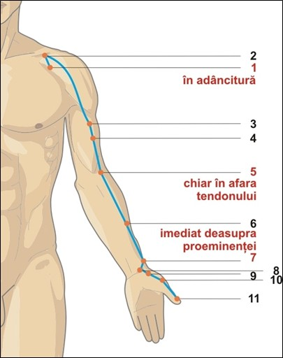

Fereastra regenerării profunde și a introspecției
Plămânul atinge potențialul maxim în intervalul 03:00 – 05:00 — momentul de trecere de la Yin profund la Yang, când Qi-ul pulmonar își curăță căile și se pregătește pentru noua zi. Trezirile frecvente la această oră indică un dezechilibru al Metalului (tristețe, doliu, flegmă sau deficiență de Yin).
Energie, ore & elemente asociate
☯Tip energetic
- Yin Mare — Shou Taiyin (手太阴): Cel mai interior nivel Yin al mâinii, dar paradoxal cel mai exterior dintre meridianele Yin (deschidere către piele, mucoase și respirație). Este poarta prin care Qi-ul Cerului intră în corp.
- Meridian pereche: Intestin Gros (Shou Yangming 手阳明). Împreună guvernează respirația, imunitatea mucoaselor și eliminarea reziduurilor — cuplul Metalului.
- Spirit: Po (魄) — sufletul corporal, ansamblul celor șapte suflete senzoriale care guvernează instinctele, senzațiile corporale și nevoia de apartenență. Po ancorează ființa în materie.
- Organ de simț asociat: Nasul (respirația nazală, mirosul, căile aeriene superioare).
⚪Element Metal (金) — Curățenia și separarea
- Direcție: Vest | Anotimp: Toamna
- Climat: Uscăciune | Culoare: Alb
- Gust: Iute/picant | Sunet: Plânsul
- Emoție: Bucuria în echilibru; tristețea, doliul, melancolia în dezechilibru
- Țesuturi: Pielea, părul, mucoasele respiratorii
- Funcții defensive: Wei Qi (Qi-ul defensiv) — prima barieră împotriva patogenilor externi (Vânt, Frig, Uscăciune).
🕐Ceasul organic — 24 h
- Înainte — Ficatul (LV): 01:00–03:00. Curăță sângele și pregătește tranziția către respirația profundă a plămânilor.
- Plămânul (LU): 03:00–05:00. Fereastra regenerării pulmonare și a eliberării emoționale. Trezirea între orele 3-5 este un semn clasic de dezechilibru al Metalului (tristețe, doliu, flegmă, Yin deficitar).
- După — Intestin Gros (LI): 05:00–07:00. Preluarea fluidelor și eliminarea reziduurilor solide — completarea ciclului Metalului.
- Semnificație clinică: Tuse care se agravează între 3-5 dimineața = Flegmă-Căldură sau deficit de Yin pulmonar. Trezirea cu anxietate sau coșmaruri la această oră = perturbarea Po-ului.
GB
LV
LU
LI
胃
脾
HT
SI
BL
KD
心包
TW
Traseu & anatomie energetică

6 cun lateral de linia mediană, în primul spațiu intercostal, sub claviculă. Punct Mu al Plămânului. Origine superficială — reflectă capacitatea de a primi Qi-ul Cerului.
6 cun lateral, în fosa infraclaviculară. „Poarta norilor" — deschide calea Qi-ului respirator.
Coboară pe marginea radială a bicepsului. LU-3 la 3 cun sub axilă, LU-4 la 4 cun — calmează astmul și epistaxisul.
La pliul cotului, marginea radială a tendonului bicepsului. Punct He-Mare — răcorește Plămânul, elimină flegma-căldură.
LU-6 (7 cun de pliul încheieturii) — Xi-Fisură pentru urgențe pulmonare (hemoptizie, tuse acută). LU-7 (1.5 cun) — Luo-Conector, cheia Vasului Concepție (Ren Mai).
LU-8 la 1 cun deasupra pliului (Jing-Râu). LU-9 la pliul încheieturii, în depresiunea laterală a arterei radiale — Shu-Abrupt, Yuan-Sursă, punctul de tonifiere a Qi-ului pulmonar.
LU-10 pe eminența tenară (Ying-Izvor) — răcorește căldura pulmonară. LU-11 la colțul unghiei degetului mare (Jing-Izvor) — punct de urgență pentru comă, febră mare și amigdalită acută.
🔗Conexiuni interne profunde
- Originea în Arzătorul Mijlociu: Meridianul Plămânului începe în Arzătorul Mijlociu (regiunea stomacului, CV-12), reflectând legătura fundamentală dintre digestie (producerea Qi-ului din alimente) și respirație (Qi-ul aerului).
- Înfășurarea în jurul Intestinului Gros: Coboară și se înfășoară în spirală în jurul Intestinului Gros (organul său pereche Yang) — explică relația strânsă dintre constipație și astm, sau între diaree și tuse.
- Calea ascendentă către plămâni și gât: Traversează diafragma, pătrunde în plămâni, urcă pe trahee și laringe, apoi iese la suprafață la LU-1. Orice perturbare a acestui traseu produce tuse, nod în gât sau răgușeală.
- Ramura descendentă către rinichi: O ramură internă coboară spre Arzătorul Inferior și se conectează cu rinichii, facilitând coborârea Qi-ului (Su Jiang) și reglarea apei.
Rol: „Ministrul Cerului" — funcții fiziologice
🌬️Guvernarea Qi-ului & respirației
Plămânii extrag Qi-ul pur din aer și îl combină cu Qi-ul nutritiv (de la Splină) pentru a forma Qi-ul Pectoral (Zong Qi), care susține inima și circulația. „Respirația este comandantul sângelui".
⬇️⬆️Răspândirea și coborârea Qi-ului (Xuan Fa / Su Jiang)
Răspândirea trimite Wei Qi și lichidele la piele și orificii. Coborârea direcționează Qi-ul și lichidele către rinichi și vezica urinară — reglând metabolismul apei și prevenind edemele.
🛡️Protecția suprafeței (Wei Qi)
Plămânii guvernează pielea, porii și părul, controlând transpirația și termoreglarea. Sunt prima barieră împotriva Vântului, Frigului și Uscăciunii. Un Plămân puternic = imunitate robustă.
👃Deschiderea în nas & vocea
Nasul este orificiul Plămânului; mirosul fin și respirația nazală liberă reflectă sănătatea Metalului. Vocea clară și puternică depinde de Qi-ul pulmonar; răgușeala sau vocea șoptită indică deficit.
💧Reglarea căilor de apă
Prin coborârea Qi-ului, Plămânii ajută la formarea urinei și la prevenirea edemelor (mai ales la nivelul feței și membrelor superioare). Dereglarea produce retenție de lichide, tuse cu flegmă apoasă.
🌀Adăpostirea sufletului Po
Cele șapte suflete corporale (Po) guvernează instinctele, senzațiile imediate și reacțiile de supraviețuire. Un Po ancorat dă senzație de prezență, siguranță corporală și capacitatea de a „locui" în corp.
Blocaje & indicații terapeutice
⚠️Tipare patologice principale
- Deficiență de Qi al Plămânului: Respirație superficială, voce slabă, oboseală cronică, imunitate scăzută (răceli frecvente), transpirație spontană diurnă, ten palid, tendința de a plânge ușor.
- Deficiență de Yin al Plămânului (Uscăciune): Tuse seacă, gât uscat, răgușeală, transpirații nocturne, senzație de căldură în palme și tălpi, limbă roșie fără depuneri, trezire între 3-5 dimineața.
- Invazia Vânt-Frig: Frisoane, febră ușoară, nas înfundat cu secreții apoase, strănut, tuse cu expectorație albă, cefalee occipitală, gât rigid.
- Invazia Vânt-Căldură: Febră mare, dureri de gât, amigdale roșii, secreții nazale galbene, tuse cu flegmă galbenă, sete, puls rapid.
- Flegmă-Umezeală în Plămân: Tuse productivă cu expectorație albă abundentă, senzație de greutate în piept, respirație șuierătoare, limbă cu depuneri groase, oboseală.
- Flegmă-Căldură: Expectorație galben-verzuie, febră, sete, constipație, agitație, tuse violentă.
🏥Indicații terapeutice generale
- Respirator: Tuse, astm bronșic, bronșită, emfizem, rinită alergică, sinuzită, faringită, amigdalită, răgușeală.
- Infecțioase: Răceală comună, gripă, febră, pneumonie (complementar), otită medie.
- Dermatologice: Piele uscată, eczeme, psoriazis, acnee (legate de deficitul de Wei Qi), transpirație anormală.
- Nefro-urinar: Edeme faciale și ale membrelor superioare, disurie, retenție de lichide.
- Musculo-scheletice: Dureri de umăr, cot, încheietură, contractura degetului mare, durere de-a lungul traiectului radial.
- Psiho-emoționale: Tristețe cronică, doliu neprocesat, depresie, anxietate, incapacitate de a „da drumul" la trecut, sentiment de sufocare emoțională.
Sufletul corporal Po — între instinct și transcendență
Plămânii sunt „Preotul" sau „Ministrul Cerului", intermediarul între lumea subtilă (aer, Qi cosmic) și corpul fizic. Prin respirație, facem schimb constant: primim și eliberăm. La nivel emoțional, aceasta se traduce prin capacitatea de a primi experiențe noi și de a lăsa în urmă ceea ce nu mai servește. Po-ul ancorat dă vitalitate, prospețime și acceptare a pierderii ca parte naturală a vieții.
Atribute psiho-emoționale ale Plămânului
✅Atribute pozitive — Metal în armonie
- Dreptate, integritate, stimă de sine sănătoasă
- Ordine interioară, capacitate de a trăi prezentul cu prospețime
- Acceptarea pierderii și a schimbării ca parte a vieții
- Voce clară, respirație profundă, prezență corporală ancorată
- Capacitate de a primi și de a da drumul fără atașament rigid
⚠️Atribute negative — Metal dezechilibrat
- Tristețe cronică, doliu neprocesat, dezamăgire profundă
- Incapacitate de a plânge sau, dimpotrivă, plâns incontrolabil
- Rigiditate mentală, perfecționism, obsesie pentru curățenie și ordine
- Dificultate în a lăsa trecutul în urmă, ranchiună
- Senzație de sufocare emoțională, gât strâns, respirație superficială
- Distanțare emoțională, dificultate de a exprima iubirea
Manifestări psihice în funcție de tipul energetic
↓Deficit de Qi/Yin (Metal slăbit — tristețe cronică)
Tristețe profundă, melancolie, lipsă de vitalitate, voce slabă, tendința de a plânge ușor. Senzația că viața este prea grea, că nu poți „respira" liber. Imunitate psihică scăzută — orice critică sau pierdere doboară. Vise cu abandon, apă tulbure sau sufocare. Persoana se simte nevrednică, neputincioasă, incapabilă să ceară ajutor. Doliu cronic neprocesat (moartea cuiva, pierderea unui statut, a unei relații).
↑Exces de Qi (Stagnare, Flegmă sau Căldură — Metal rigid)
Rigiditate mentală, perfecționism extrem, obsesie pentru curățenie și ordine, dificultate de a delega. Oftează frecvent pentru a elibera tensiunea din piept. Iritabilitate mascată sub o aparentă controlată. Dificultate în a-și exprima vulnerabilitatea, tinde să controleze mediul pentru a evita surprizele emoționale. În exces de flegmă: confuzie, torpoare, senzație de ceață mentală. În exces de căldură: furie reprimată, iritabilitate, râs inadecvat.
Dinamica arhetipală: Plămânul & relația cu părinții
👪Relația cu principiul patern & autoritatea (Metalul)
- Armonie: Echilibru între structură și flexibilitate. Capacitatea de a respecta regulile fără a deveni rigid. Relație sănătoasă cu autoritatea (părinte, șef, societate). Simț al propriei demnități și integrități.
- Dezechilibru ușor: Ușoară tensiune cu autoritatea paternă, senzația de a fi constrâns de așteptări prea înalte. Tendința de a internaliza critica și de a deveni auto-critic.
- Dezechilibru moderat: Conflict deschis cu figura paternă sau cu orice formă de autoritate. Respingerea structurii, rebelism sau, dimpotrivă, supunere excesivă și pierderea sinelui. Sentimentul că „nu sunt suficient de bun" după standardele tatălui.
- Dezechilibru sever: Traumă legată de respingerea sau abandonul din partea tatălui. Incapacitatea de a stabili limite sănătoase. Fie hiper-control (perfecționism paralizant), fie haos total și dezorganizare. Doliu cronic neprocesat legat de moartea sau absența tatălui.
Observație: Meridianul Plămânului (Metal) este asociat cu tatăl și cu principiul autorității, separării și valorii proprii. Relația cu mama este guvernată mai degrabă de Splină (Pământ) sau de Inimă (Foc).
Instrument de evaluare a meridianului Plămânului
Glisați pe bara colorată sau utilizați meniul dropdown pentru a selecta starea energetică. Profilul complet — fiziologic, nutrițional, emoțional și terapeutic — se afișează imediat. Corelați cu măsurătorile de biorezonanță și cu istoricul emoțional.
Evaluare energetică — Meridian Plămân (LU)
Selectați nivelul observat: glisați pe bară, trageți indicatorul sau utilizați meniul.
Meridianul Plămânului (Shou Taiyin) — 11 puncte LU
Tabel complet cu localizare de precizie, categorie energetică (sistemul Shu-Antice), funcții principale și indicații terapeutice detaliate. Punctele cu ⭐ sunt de uz frecvent în clinică și autoterapie.
| Punct | Localizare | Categorie | Funcții principale | Indicații detaliate |
|---|---|---|---|---|
| LU-1Zhongfu 中府 · Palatul Central |
6 cun lateral de linia mediană anterioară, în primul spațiu intercostal, sub claviculă. | Front-Mu al Plămânului |
|
Respirator: Tuse, astm, congestie pulmonară, senzație de plenitudine în piept. Locomotor: Dureri de umăr și spate, periartrită scapulohumerală. ORL: Amigdalite, faringite. Obs: Punctul Mu al plămânului – reflectă direct starea energetică a organului. |
| LU-2Yunmen 云门 · Poarta Norilor |
6 cun lateral de linia mediană, în fosa infraclaviculară, superior de procesul coronoid al scapulei. | Punct local |
|
Respirator: Tuse, astm, durere în piept, senzație de iritație toracică. Locomotor: Dureri de umăr și spate, limitarea mișcărilor brațului. |
| LU-3Tianfu 天府 · Palatul Ceresc |
3 cun sub pliul axilar anterior, pe marginea radială a mușchiului biceps. | Punct local |
|
Respirator: Astm, tuse, dispnee. ORL: Epistaxis recurent, hipertiroidie. Emoțional: Tristețe profundă, anxietate. Locomotor: Dureri de braț pe fața anterioară. |
| LU-4Xiabai 侠白 · Alb Proteguitor |
4 cun sub pliul axilar anterior, pe marginea radială a bicepsului (sau 5 cun deasupra pliului cotului). | Punct local |
|
Respirator: Tuse, astm, neliniște toracică. Digestiv: Senzație de vomă, regurgitații. Locomotor: Dureri de braț, contracturi musculare. |
| LU-5Chize 尺泽 · Mlaștina Cotului ⭐ |
La pliul cotului, în depresiunea marginii radiale a tendonului mușchiului biceps brahial. | He-Mare (合) Punct de răcire |
|
Respirator: Tuse, astm, hemoptizie, senzație de sufocare, răgușeală. Febril: Febră (mai ales după-amiaza), convulsii infantile. Digestiv: Vomă, diaree, gastroenterită acută. Locomotor: Dureri de cot și braț, contracturi. |
| LU-6Kongzui 孔最 · Gaura Extremă |
Pe fața anterioară a antebrațului (partea radială), 7 cun deasupra pliului încheieturii, pe linia LU-5 → LU-9. | Xi-Fisură (郄) |
|
Respirator acut: Tuse paroxistică, astm acut, hemoptizie (tuberculoză, bronșiectazii). ORL: Răgușeală bruscă, faringită acută. Proctologic: Hemoroizi sângerânzi. Locomotor: Dureri acute de cot și antebraț. |
| LU-7Lieque 列缺 · Secvență Întreruptă ⭐⭐ |
1.5 cun deasupra pliului încheieturii mâinii, proximal de procesul stiloid al radiusului, între mușchii brahioradial și abductor lung al policelui. | Luo-Conector (络) Cheie Ren Mai |
|
Răceli incipiente: Cefalee, rigiditate cervicală, strănut, tuse, răgușeală. ORL: Paralizie facială, dureri de dinți (maxilar superior). Urinar: Enurezis, retenție urinară (prin Ren Mai). Obs: Punctul clasic pentru afecțiunile gâtului și capului „patru puncte pentru cap și gât". |
| LU-8Jingqu 经渠 · Canalul Meridianului |
1 cun deasupra pliului încheieturii, în depresiunea dintre procesul stiloid al radiusului și artera radială. | Jing-Râu (经) |
|
Respirator: Tuse, astm, durere în piept, răgușeală. Cardiac: Palpitații funcționale. Locomotor: Dureri ale încheieturii mâinii, sindrom de tunel carpian. |
| LU-9Taiyuan 太渊 · Abisul Mare ⭐ |
La pliul încheieturii mâinii, pe partea radială, în depresiunea laterală a arterei radiale (unde se palpează pulsul). | Shu-Abrupt (输) Yuan-Sursă (原) Punct de tonifiere |
|
Respirator: Tuse, astm, hemoptizie, voce slabă, oboseală cronică. Vascular: „Boala fără puls" (arterită Takayasu), hipertensiune, hipotensiune. Locomotor: Dureri de încheietură, sindrom de tunel carpian. Obs: Punctul Yuan-Sursă al plămânului – tonifiere profundă a Qi-ului pulmonar. |
| LU-10Yuji 鱼际 · Marginea Peștelui |
Pe eminența tenară, la mijlocul metacarpianului 1, la granița dintre tegumentul dorsal și cel palmar. | Ying-Izvor (荥) |
|
Respirator: Tuse, hemoptizie, răgușeală, afazie. ORL: Dureri de gât, amigdalită acută. Febril: Febră, senzație de căldură în palmă. Obs: Punct important pentru afecțiunile acute ale gâtului și plămânului în exces de căldură. |
| LU-11Shaoshang 少商 · Comerțul Minor ⭐ |
Pe partea radială a degetului mare, 0.1 cun proximal de unghiul unghiei. | Jing-Izvor (井) Punct de urgență |
|
Urgențe: Comă, insolație, sincopă, convulsii febrile la copii. ORL acut: Amigdalită acută supurată, răgușeală bruscă, epistaxis. Respirator: Tuse violentă cu căldură. Obs: Punctul clasic de sângerare pentru febră mare și comă (împreună cu LI-1, PC-9, HT-9). |
Protocoale de autoterapie — Elementul Metal
Tehnicile de mai jos pot fi practicate zilnic fără echipament special. Fereastra optimă pentru practici LU: dimineața devreme (03:00–05:00 este dificil, așadar se recomandă între 05:00–07:00, înainte de dejun), sau seara înainte de culcare pentru a calma tristețea și a tonifica Qi-ul.
Tehnici de acupresură & autoterapie
Automasaj pe traiect LU
Masați de la umăr (zona LU-1/LU-2), coborâți pe fața anterioară a brațului (partea policelui), cot (LU-5), antebraț și încheietură (LU-9) până la degetul mare (LU-11). 5–10 minute / braț, dimineața. Îmbunătățește imunitatea, eliberează tensiunea toracică și calmează tusea.
LU-9 Taiyuan — tonifiere Qi pulmonar ⭐⭐
Apăsați ușor cu policele în scobitura de la pliul încheieturii, lateral de artera radială (unde se simte pulsul). Respirați profund. 1–2 minute / mână, de 2 ori pe zi. Tonifică Qi-ul Plămânului, tratează vocea slabă, oboseala, imunitatea scăzută și „boala fără puls".
LU-7 Lieque — răceli incipiente și cefalee ⭐
Încrucișați degetele mari ale ambelor mâini. Cu policele opus, masați punctul situat pe marginea radiusului, la 1,5 cun deasupra încheieturii. 1 minut / mână, la primul semn de răceală. Eliberează Vânt-Frig, calmează cefaleea occipitală și rigiditatea cervicală.
LU-5 Chize — răcorire și eliminare flegmă
Masaj ferm în pliul cotului, pe marginea radială a tendonului bicepsului. 1 minut / braț. Răcorește căldura pulmonară, elimină flegma galbenă, calmează tusea și febra. Excelent în bronșite acute.
Respirația „Metalului" — curățarea tristeții
Așezat drept, inspirați pe nas numărând 4, rețineți 2, expirați lent pe gură numărând 6, făcând un sunet ușor „ssss" (sunetul elementului Metal). Vizualizați o lumină albă curățind plămânii. 5–10 minute dimineața sau seara. Reduce anxietatea, doliul și eliberează tensiunea din piept.
Nutriție pentru Metal
Tonifiere Qi (deficit): Alimente iute-picante moderate (ceapă, usturoi, ghimbir, ridiche neagră, hrean, muștar). Cereale integrale (orez, ovăz), pere coapte, miere, ciuperci (maitake, shiitake). Răcorire (exces de căldură): Pere crude, pepene galben, ridichi albă, castraveți, ceai de crizantemă, mentă. Evitați: Lactatele (produc flegmă), zahărul rafinat, prăjelile, excesul de carne roșie.
Suplimente & fitoterapie LU
Imunitate & respirator: Vitamina C (1–2 g/zi), D3 (2000–4000 UI), Zinc (15–30 mg), Seleniu (100–200 mcg). Quercetină (500 mg), NAC (600–1200 mg). Plante: Astragalus (tonifiere Qi), Reishi (adaptogen pulmonar), Cordyceps (oxigenare), Pelin (pentru flegmă), Schisandra (Yin pulmonar). Probiotice pentru axul plămân-intestin gros.
Qi Gong pentru Metal — „Deschiderea pieptului"
Stând în picioare, brațele în față la nivelul pieptului, palmele privind în jos. Inspirați și desfaceți brațele în lateral ca și cum ați deschide o poartă. La expir, aduceți palmele la piept (LU-1) și apăsați ușor în jos. 9 repetări, dimineața. Deschide toracele, eliberează tristețea și tonifică Qi-ul pulmonar.
Protocol clinic — combinații de acupunctură
🏥Combinații clinice recomandate
- Deficiență de Qi pulmonar (oboseală, voce slabă, răceli frecvente): LU-9 (Taiyuan) tonifiere + ST-36 (Zusanli) + CV-4 (Guanyuan) + BL-13 (Feishu).
- Deficiență de Yin pulmonar (tuse seacă, transpirații nocturne): LU-7 (Lieque) + KD-6 (Zhaohai) + LU-5 (Chize) dispersie ușoară + SP-6 (Sanyinjiao).
- Invazie Vânt-Frig (răceală incipientă): LU-7 (Lieque) + LI-4 (Hegu) + UB-12 (Fengmen) + GV-16 (Fengfu) — eliberarea suprafeței.
- Flegmă-Umezeală în plămâni (tuse productivă cu flegmă albă): LU-5 (Chize) + LU-9 + ST-40 (Fenglong) + CV-12 (Zhongwan).
- Flegmă-Căldură (flegmă galben-verzuie, febră): LU-5 (răcire) + LU-10 (Yuji) + LI-11 (Quchi) + ST-44 (Neiting).
- Tristețe cronică, doliu, anxietate: LU-7 (Lieque) + PC-6 (Neiguan) + HT-7 (Shenmen) + BL-13 (Feishu) + BL-42 (Pohu).
💬Recomandări psiho-comportamentale — Integritate și doliu
- Procesarea doliului: Jurnal de pierdere, scrisori neverbale către persoana sau situația pierdută. Terapie pentru doliu complicat. Ritualuri simbolice de separare.
- Stabilirea limitelor sănătoase: Exersați refuzul politicos, spuneți „nu" fără vinovăție. Curățenia fizică a spațiului personal — dar fără exces compulsiv.
- Respirație conștientă: 5 minute de respirație diafragmatică de 2-3 ori pe zi. Reduce anxietatea și recalibrează axul plămân-inimă.
- Activități toamna: Plimbări în natură, mai ales în pădure (aer curat, miros de frunze uscate). Colectarea de frunze — simbol al acceptării pierderii.
- Muzică pentru Metal: Tonurile de metal (clopote, hang, gamelan), frecvențe 432 Hz, muzică cu coarde de metal. Ajută la eliberarea tristeții și la ancorarea Po-ului.
Indicații de urgență
Hemoptizie masivă, dispnee severă cu cianoză, comă, febră hiperpiretică (>40°C) cu convulsii — necesită evaluare medicală de urgență. Acupunctura este complementară. Punctele LU-6 (Kongzui) și LU-11 (Shaoshang) pot fi stimulate prin presiune fermă sau sângerare (doar de către specialist) în caz de hemoptizie acută sau comă, până la sosirea asistenței medicale.